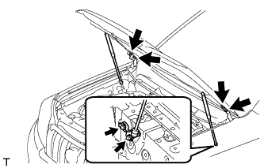
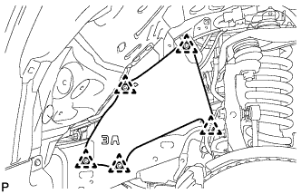
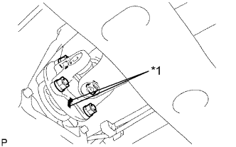

ДВИГАТЕЛЬ В СБОРЕ > СНЯТИЕ |
| 1. СБРОСЬТЕ ДАВЛЕНИЕ В ТОПЛИВНОЙ СИСТЕМЕ |
Сбросьте давление в топливной системе (Нажмите здесь).
| 2. ОТСОЕДИНИТЕ ПРОВОД ОТ ОТРИЦАТЕЛЬНОГО ВЫВОДА АККУМУЛЯТОРНОЙ БАТАРЕИ |
| 3. СНИМИТЕ КАПОТ В СБОРЕ |
Отсоедините шланг форсунки омывателя.
|  |
Выверните 8 болтов и снимите капот.
| 4. СНИМИТЕ УЗЕЛ ВЕНТИЛЯЦИОННОЙ РЕШЕТКИ В ВЕРХНЕЙ ЧАСТИ КОЖУХА |
Снимите вентиляционную решетку в верхней части кожуха (Нажмите здесь).
| 5. СНИМИТЕ НИЖНЮЮ НАКЛАДКУ ПЕРЕДНЕГО БАМПЕРА |
Освободите фиксатор, выверните 5 болтов и снимите нижнюю облицовку переднего бампера.
| 6. СНИМИТЕ ЗАЩИТУ КАРТЕРА ДВИГАТЕЛЯ № 1 В СБОРЕ |
 |
Выверните 4 болта.
Отсоедините защиту картера двигателя от кузова автомобиля, как показано на рисунке.
| 7. СНИМИТЕ НИЖНЮЮ КРЫШКУ ТРАНСМИССИИ |
Выверните 2 болта и снимите нижнюю крышку трансмиссии.
| 8. СНИМИТЕ ЗАДНЮЮ НИЖНЮЮ КРЫШКУ ДВИГАТЕЛЯ В СБОРЕ |
Выверните 4 болта и снимите заднюю защиту картера двигателя.
| 9. СНИМИТЕ ВЕРХНЕЕ УПЛОТНЕНИЕ КРОНШТЕЙНА РАДИАТОРА |
Освободите 13 фиксаторов и снимите верхнее уплотнение кронштейна радиатора.
| 10. СЛЕЙТЕ ОХЛАЖДАЮЩУЮ ЖИДКОСТЬ ДВИГАТЕЛЯ |

| *1 | Пробка расширительного бачка | *2 | Пробка радиатора |
| *3 | Пробка сливного крана блока цилиндров | *4 | Пробка сливного крана радиатора |
 |
Установите виниловый шланг со стороны радиатора.
| *1 | Виниловый шланг |
 |
Установите виниловый шланг со стороны двигателя.
| *1 | Виниловый шланг |
Ослабьте пробку сливного крана радиатора.
Снимите пробку радиатора и слейте охлаждающую жидкость.
Ослабьте пробку сливного крана блока цилиндров и слейте охлаждающую жидкость из двигателя.
| 11. СЛЕЙТЕ МОТОРНОЕ МАСЛО |
Снимите крышку маслоналивной горловины.
Снимите пробку сливного отверстия масляного поддона и прокладку, и слейте масло в емкость.
| 12. СЛЕЙТЕ ЖИДКОСТЬ ДЛЯ АВТОМАТИЧЕСКОЙ ТРАНСМИССИИ (для моделей с автоматической трансмиссией) |
Снимите пробку сливного отверстия и прокладку, и слейте трансмиссионную жидкость.
Установите новую прокладку и пробку сливного отверстия.
| 13. СНИМИТЕ КРЫШКУ ВОЗДУШНОГО ФИЛЬТРА В СБОРЕ |
 |
Открепите 3 зажима и отсоедините разъем датчика массового расхода воздуха.
Выверните болт, отсоедините зажим и снимите провод соединения с массой.
Отцепите 4 зажима.
Ослабьте зажим шланга и снимите крышку воздушного фильтра.
| 14. СНИМИТЕ КОРПУС ВОЗДУШНОГО ФИЛЬТРА |
 |
Снимите фильтрующий элемент воздушного фильтра.
Выверните 3 болта и снимите корпус воздушного фильтра.
| 15. СНИМИТЕ ПАТРУБОК ПОДАЧИ ВОЗДУХА |
 |
Отсоедините шланг вентиляции картера № 2.
Освободите зажим жгута проводов.
 |
Отсоедините вакуумный шланг.
 |
Ослабьте хомут шланга.
Выверните 3 болта и снимите соединитель впуска воздуха.
| 16. СНИМИТЕ ШЛАНГ СИСТЕМЫ ПОДАЧИ ВОЗДУХА В НЕЙТРАЛИЗАТОР № 1 |
Снимите хомут шланга.
Зажмите плоскогубцами захваты хомутов и сдвиньте хомуты, чтобы снять шланг системы подачи воздуха в нейтрализатор.
| 17. СНИМИТЕ РАСШИРИТЕЛЬНЫЙ БАЧОК РАДИАТОРА |
 |
Отсоедините шланг бачка от радиатора.
Выверните 3 болта и снимите расширительный бачок радиатора.
| 18. СНИМИТЕ ПАТРУБОК РАДИАТОРА № 1 |
Зажмите плоскогубцами захваты хомутов и сдвиньте хомуты, чтобы снять шланг радиатора.
| 19. СНИМИТЕ ШЛАНГ РАДИАТОРА № 2 |
Зажмите плоскогубцами захваты хомутов и сдвиньте хомуты, чтобы снять шланг радиатора.
| 20. СНИМИТЕ КОЖУХ ВЕНТИЛЯТОРА |
 |
Отсоедините захват, чтобы разомкнуть зажим гибкого шланга.
 |
Ослабьте 4 гайки, крепящие вентилятор вискомуфты.
Снимите поликлиновой ремень вентилятора и генератора (Нажмите здесь).
 |
Выверните 2 болта, крепящие кожух вентилятора.
Отверните 4 гайки вентилятора вискомуфты, а затем снимите кожух вместе с вентилятором вискомуфты.
| 21. СНИМИТЕ ВПУСКНОЙ ПАТРУБОК МАСЛЯНОГО РАДИАТОРА № 1 И ВЫПУСКНОЙ ПАТРУБОК МАСЛЯНОГО РАДИАТОРА № 1 (для моделей с автоматической трансмиссией) |
 |
Отсоедините впускной патрубок № 1 и выпускной патрубок № 1 масляного радиатора от трубки масляного радиатора № 2.
Отсоедините 2 патрубка от впускного патрубка масляного радиатора и выпускного патрубка масляного радиатора № 1 и снимите их.
| 22. СНИМИТЕ ТОПЛИВНЫЙ ШЛАНГ |
Отцепите 2 зажима.
Снимите топливный шланг (Нажмите здесь).
| 23. СНИМИТЕ ТОПЛИВНЫЙ ШЛАНГ № 2 |
 |
Отсоедините топливный шланг от зажима.
Зажмите плоскогубцами захваты хомутов и сдвиньте хомуты, чтобы снять топливный шланг.
| 24. ОТСОЕДИНИТЕ ПРОДУВОЧНЫЙ ШЛАНГ |
Отсоедините продувочный шланг от электровакуумного клапана.
| 25. ОТСОЕДИНИТЕ ШЛАНГ МЕЖДУ ШТУЦЕРОМ И ОБРАТНЫМ КЛАПАНОМ |
Зажмите плоскогубцами захваты хомута и сдвиньте хомут, чтобы отсоединить шланг обратного клапана.
| *A | Для моделей с правосторонним рулевым управлением |
| *B | Для моделей с левосторонним рулевым управлением |
| 26. ОТСОЕДИНИТЕ ПАТРУБОК ОТОПИТЕЛЯ |
Отсоедините 2 патрубка отопителя.
| 27. ОТСОЕДИНИТЕ ЛОПАСТНОЙ НАСОС В СБОРЕ |
 |
Выверните болт и отсоедините нагнетательный патрубок.
 |
Отсоедините 2 разъема.
Выверните 2 болта и отсоедините лопастной насос.
| 28. ОТСОЕДИНИТЕ КОМПРЕССОР СИСТЕМЫ КОНДИЦИОНИРОВАНИЯ В СБОРЕ |
 |
Выверните болт и отсоедините трубопровод низкого давления от двигателя.
 |
Отсоедините разъем.
Выверните 4 болта и отсоедините компрессор системы кондиционирования.
| 29. СНИМИТЕ УПЛОТНЕНИЕ № 1 МЕЖДУ ФАРТУКОМ ПРАВОГО ПЕРЕДНЕГО КРЫЛА И РАМОЙ |
|  |
Освободите 5 фиксаторов и снимите уплотнение между фартуком переднего крыла и рамой.
| 30. СНИМИТЕ УПЛОТНЕНИЕ № 1 МЕЖДУ ФАРТУКОМ ЛЕВОГО ПЕРЕДНЕГО КРЫЛА И РАМОЙ |
 |
Освободите 5 фиксаторов и снимите уплотнение между фартуком переднего крыла и рамой.
| 31. ОТСОЕДИНИТЕ ЖГУТ ПРОВОДОВ ДВИГАТЕЛЯ |
 |
Открепите 3 зажима и отсоедините жгут электропроводки двигателя с правой стороны автомобиля.
Отсоедините разъем ЭБУ.
Снимите дверцу перчаточного ящика (Нажмите здесь).
 |
Расцепите зажим и отсоедините 9 разъемов.
| *A | Для моделей с левосторонним рулевым управлением |
| *B | Для моделей с правосторонним рулевым управлением |
Для моделей с левосторонним рулевым управлением:
Снимите 2 зажима.
| *A | Для моделей с левосторонним рулевым управлением |
| *B | Для моделей с правосторонним рулевым управлением |
Для моделей с правосторонним рулевым управлением:
Снимите зажим.
Отсоедините уплотнительную шайбу от опоры жгута проводов.
| *A | Для моделей с левосторонним рулевым управлением |
| *B | Для моделей с правосторонним рулевым управлением |
 |
Освободите 4 захвата, чтобы снять опору жгута проводов с автомобиля, а затем вытяните разъем ECM, чтобы снять его с автомобиля.
| *A | Для моделей с левосторонним рулевым управлением |
| *B | Для моделей с правосторонним рулевым управлением |
 |
Отсоедините разъем и зажим.
Отверните гайку с блока реле № 1 моторного отсека.
Открепите 2 зажима и отсоедините жгут проводов от блока реле № 1 моторного отсека.
Снимите 2 зажима.
Выверните болт и отсоедините провод соединения с массой.
Выверните болт и отсоедините кронштейн от левого кронштейна опоры двигателя.
| 32. СНИМИТЕ ПРИЕМНУЮ ТРУБУ В СБОРЕ |
Отсоедините разъем датчика состава топливовоздушной смеси и освободите зажим жгута проводов.
Отсоедините разъем подогреваемого кислородного датчика и освободите зажим жгута проводов.
Для 3-дверных моделей:
Выверните 4 болта и снимите 2 пружины сжатия.
Для 5-дверных моделей:
Выверните 4 болта и снимите 4 пружины сжатия.
Снимите приемную трубу с опоры трубы.
| 33. СНИМИТЕ ОПОРУ КОЛЛЕКТОРА |
 |
Отверните 3 болта и снимите опору коллектора.
| 34. СНИМИТЕ КАРДАННЫЙ ВАЛ В СБОРЕ |
 |
Нанесите метки на фланец карданного вала и фланец раздаточной коробки.
| *A | Для 3-дверных моделей: |
| *B | Для 5-дверных моделей: |
| *a | Метка |
Отверните 4 гайки и снимите 4 шайбы.
 |
Нанесите метки на фланец карданного вала и фланец дифференциала.
| *A | Для 3-дверных моделей: |
| *B | Для 5-дверных моделей: |
| *a | Метка |
Отверните 4 гайки и снимите 4 болта и 4 шайбы.
Снимите карданный вал.
| 35. СНИМИТЕ ПЕРЕДНИЙ КАРДАННЫЙ ВАЛ В СБОРЕ |
 |
Нанесите метки на фланец карданного вала и дифференциал.
| *a | Метка |
Снимите 4 гайки, 4 болта, 4 шайбы и передний карданный вал в сборе.
|  |
Нанесите метки на фланец карданного вала и фланец раздаточной коробки.
| *a | Метка |
Отверните 4 гайки и снимите 4 шайбы и передний карданный вал в сборе.
| 36. ВЫВЕРНИТЕ УСТАНОВОЧНЫЙ БОЛТ ВЕДУЩЕГО ДИСКА И МУФТЫ ГИДРОТРАНСФОРМАТОРА (для моделей с автоматической трансмиссией) |
Снимите пылезащитное уплотнение картера маховика.
Проверните коленчатый вал, чтобы обеспечить доступ к 6 болтам, и, удерживая ключом болт шкива коленчатого вала, выверните каждый из болтов.
| 37. СНИМИТЕ СТАРТЕР В СБОРЕ |
Для моделей мощностью 1,4 кВт:
Снимите стартер в сборе (Нажмите здесь).
Для моделей мощностью 2,0 кВт:
Снимите стартер в сборе (Нажмите здесь).
| 38. СНИМИТЕ АВТОМАТИЧЕСКУЮ ТРАНСМИССИЮ В СБОРЕ (для моделей с автоматической трансмиссией) |
Снимите автоматическую трансмиссию в сборе (Нажмите здесь).
| 39. СНИМИТЕ МЕХАНИЧЕСКУЮ ТРАНСМИССИЮ В СБОРЕ (для моделей с механической трансмиссией) |
Снимите механическую трансмиссию в сборе (Нажмите здесь).
| 40. СНИМИТЕ ЗАДНЮЮ ПОДУШКУ ОПОРЫ ДВИГАТЕЛЯ № 1 |
Для моделей с автоматической трансмиссией:
Выверните 4 болта из подушки задней опоры двигателя.
Выверните болт и снимите теплозащитный экран задней опоры двигателя.
Выверните 4 болта и снимите подушку опоры двигателя с трансмиссии.
Для моделей с механической трансмиссией:
Выверните 4 болта из подушки задней опоры двигателя.
Выверните болт и снимите теплозащитный экран задней опоры двигателя.
Выверните 4 болта и снимите подушку опоры двигателя с трансмиссии.
| 41. СНИМИТЕ ВЕДУЩИЙ ДИСК И КОРОННУЮ ШЕСТЕРНЮ В СБОРЕ (для моделей с автоматической трансмиссией) |
Зафиксируйте коленчатый вал с помощью SST.
 |
Выверните 10 болтов и снимите заднюю распорную втулку ведущего диска, ведущий диск и переднюю распорную втулку ведущего диска.
| 42. СНИМИТЕ КОЖУХ СЦЕПЛЕНИЯ В СБОРЕ (для моделей с механической трансмиссией) |
 |
Нанесите метки на кожух сцепления и маховик.
| *a | Метка |
Ослабьте все установочные болты, поочередно выворачивая их на один оборот, пока не ослабнет натяжение пружины.
Выверните 6 установочных болтов и снимите кожух сцепления.
| 43. СНИМИТЕ ВЕДОМЫЙ ДИСК СЦЕПЛЕНИЯ В СБОРЕ (для моделей с механической трансмиссией) |
| 44. СНИМИТЕ МАХОВИК В СБОРЕ (для моделей с механической трансмиссией) |
Зафиксируйте коленчатый вал с помощью SST.
Выверните 10 болтов и снимите маховик.
| 45. СНИМИТЕ ЗАДНЮЮ КРЫШКУ |
Отсоедините пылезащитное уплотнение картера маховика.
Выверните 2 болта и снимите заднюю крышку.
| 46. УСТАНОВИТЕ КРЮК ДЛЯ ВЫВЕШИВАНИЯ ДВИГАТЕЛЯ № 1 |
Установите 2 крюка для вывешивания двигателя, закрепив их 2 болтами, как показано на рисунке.
| *a | Левая сторона |
| *b | Правая сторона |
| Крюк для вывешивания двигателя № 1 | 12281-75040 |
| Болт | 91552-A1020 |
| 47. СНИМИТЕ ДВИГАТЕЛЬ В СБОРЕ |
С помощью устройства для подъема двигателя и цепного блока подвесьте двигатель.
Выверните 4 болта и отверните гайки подушки опоры двигателя.
| *a | Правая сторона |
| *b | Левая сторона |
Двигатель, снятый с автомобиля, следует поднимать медленно и осторожно.
| 48. ЗАКРЕПИТЕ ДВИГАТЕЛЬ НА СТЕНДЕ ДЛЯ ДВИГАТЕЛЯ |
Закрепите двигатель на стенде для двигателя с помощью болтов.
Выверните 2 болта и снимите 2 крюка для вывешивания двигателя.